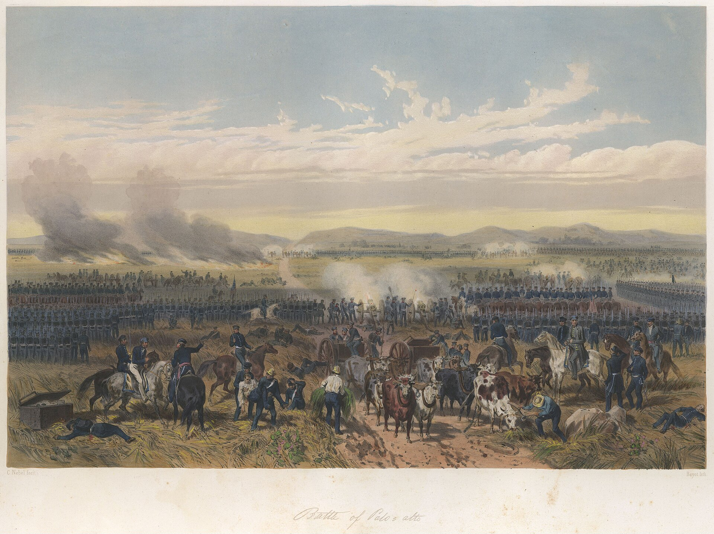

Directions: Read the full text, then answer the questions at the end.
The line drawn in 1820 across the Louisiana Purchase lands held through the 1820s while settlement filled the country east of the Mississippi. The population of the republic doubled and doubled again, and steamboats and canals carried families and goods west in growing volume. Each new state entered a union that had agreed, for the moment, where slavery could go.
By the 1840s the question had changed. Americans argued less about whether more of the continent would be taken than about the story the taking would be told in, and about the rules for slavery in the new country once it was taken.
American settlers entered Mexican Texas in the 1820s on conditions Mexico set and the settlers increasingly ignored, and slavery, which Mexico had restricted, spread among them. Texas revolted in 1836 and won independence at San Jacinto that April.
The Republic of Texas then stood outside the Union for nine years, recognized by the United States and courted by Britain and France. A Texas admitted was a slave state admitted, and the Senate balance stood in the way. Annexation arrived in 1845 by joint resolution, a simple majority of both houses doing what a treaty needing two thirds of the Senate could not, in the last days of Tyler's presidency, with James K. Polk elected on expansion.
In 1845 the editor John L. O'Sullivan wrote of the nation's manifest destiny to overspread the continent allotted by Providence. The phrase gave the movement its theology. The continent stood described as a gift already given, and American institutions as the proof the gift was deserved, so expansion could be told as fulfillment rather than as taking.
The reading states plainly what the phrase was built to make hard to see. The continent was inhabited, governed, and claimed. Native nations held country that survey lines crossed as if the lines settled the question, and a Mexican republic held northern provinces that were thinly settled but sovereign, with Mexican citizens living under Mexican law from Texas to California. Their claims rested on law, on residence, and on governments of their own.

The Oregon Country had been jointly occupied by the United States and Britain since 1818, and American settlers moving overland raised the pressure to divide it. The campaign cry of 1844 demanded the whole country to the line of 54 degrees 40 minutes, in the slogan fifty-four forty or fight.
Polk settled instead at the 49th parallel in 1846, by treaty with Britain, while a war was opening against Mexico. The same president accepted half of his claim against Britain by negotiation and took a vast country from Mexico by war. The difference between the two negotiations is part of the lesson.
Polk ordered American troops into the ground between the Nueces River and the Rio Grande, ground both nations claimed. In April 1846 a Mexican force attacked American dragoons there, in the clash called the Thornton affair. Polk told Congress on May 11, 1846, that Mexico had shed American blood upon American soil. Abraham Lincoln answered later, in December 1847, with his spot resolutions, demanding that the president name the exact spot where blood had been shed and show that the spot was American soil.
The war ran on three roads. Zachary Taylor fought in northern Mexico, Winfield Scott landed at Veracruz and marched to Mexico City, and Stephen Kearny and John C. Fremont moved in New Mexico and California, where the Bear Flag revolt had raised an American flag. The United States won its campaigns against a Mexican republic divided against itself.
The war drew opposition at home. Many Whigs voted supplies for the army while doubting the cause, and abolitionists named it a slave power war fought for new slave states. Henry David Thoreau went to a Massachusetts jail for refusing a tax he tied to the war.
The Treaty of Guadalupe Hidalgo, signed on February 2, 1848, confirmed the Rio Grande as the boundary of Texas and ceded California, New Mexico, and the country between to the United States, for fifteen million dollars and the assumption of American claims against Mexico. Some five hundred thousand square miles changed hands in a signature, an estimate as the cession is usually reckoned. The treaty reached Washington nearly unopposed, because opposing it meant opposing the peace. Its eighth article gave Mexican citizens in the ceded lands a choice, to keep Mexican citizenship or become citizens of the United States, with their property respected. Mexicans who stayed became part of a United States enlarged by land they already lived on.
While the war still ran, Representative David Wilmot of Pennsylvania offered his proviso in 1846. It would have barred slavery in any territory taken from Mexico. The proviso passed the House again and again on votes that divided by section, and it died in the Senate each time, so it never became law.
The question the Missouri line had answered for the Louisiana lands now stood unanswered for the Mexican cession. In one lifetime the republic had doubled and doubled again, its government had proved workable, and its armies had won. The one question every settlement since 1787 had deferred, whether slavery would follow the flag into new country, stood alone on the table of the enlarged house.
1. State how Texas entered the Union in 1845. Name the method used, the vote it required, and the method that had failed.
2. State what O'Sullivan's phrase claimed about the continent, and name the two holders of the continent the reading says the phrase made hard to see.
3. Compare the Oregon settlement with the Mexican settlement. State the line Oregon was divided at, the year, and the different method used in each case.
4. State the claim Polk made to Congress in May 1846, and state the demand Lincoln made in his spot resolutions in answer.
5. Answer in a short paragraph. The lesson question asks what Americans told themselves expansion was, and what the war with Mexico left unsettled. Give the strongest answer the reading supports, using the Wilmot Proviso as evidence.
1. State how Texas entered the Union in 1845. Texas entered by annexation under a joint resolution of Congress, which required a simple majority of both houses. The method that had failed was a treaty of annexation, which would have needed two thirds of the Senate. The resolution passed in the last days of Tyler's presidency, with Polk elected on a promise of expansion.
2. State what the phrase claimed, and name the two holders it made hard to see. O'Sullivan's phrase claimed that the continent had been allotted by Providence to the United States, destined to overspread it for the free development of its growing people, so expansion read as fulfillment of a gift rather than as taking. The reading says the phrase made hard to see that the continent was held by Native nations, whose country the survey lines crossed, and by the Mexican republic, whose northern provinces were thinly settled but sovereign.
3. Compare the Oregon and Mexican settlements. Oregon was divided at the 49th parallel in 1846 by treaty with Britain, although the campaign cry of 1844 had demanded the whole country to 54 degrees 40 minutes. Mexico's northern country was taken by war, fought from 1846 to 1848 and closed by the Treaty of Guadalupe Hidalgo. Polk accepted half his claim against Britain by negotiation while taking a vast country from Mexico by war.
4. State Polk's claim and Lincoln's demand. Polk told Congress on May 11, 1846 that Mexico had passed the boundary of the United States, invaded its territory, and shed American blood upon American soil, and that war existed by Mexico's act. Lincoln's spot resolutions, offered in December 1847, demanded that the president inform the House whether the exact spot where the blood was shed was or was not American soil at that time, testing the ground on which the war message rested.
5. What did Americans tell themselves, and what was left unsettled? Full credit answers hold both halves. Americans told themselves, in O'Sullivan's phrase of 1845, that expansion was a manifest destiny allotted by Providence, the continent given for the free development of their institutions, a story that turned annexation and war into fulfillment. What the war left unsettled was slavery in the new country. David Wilmot's proviso of 1846 would have barred slavery in any territory taken from Mexico, passed the House repeatedly on sectional votes, and died in the Senate, so the question the Missouri line had answered for the Louisiana lands stood unanswered for the Mexican cession in February 1848. A paragraph that names only the phrase, or only the proviso, earns partial credit.